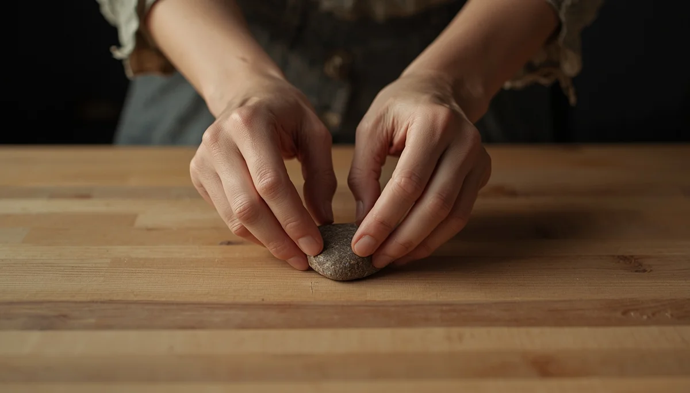

El origen emocional de la relación con la comida
La manera en que nos alimentamos de adultos hunde sus raíces en la forma en que aprendimos a gestionar nuestras emociones durante la infancia. La comida no es únicamente un aporte de nutrientes; es también el primer vehículo de afecto, consuelo y socialización. Entender este trasfondo emocional nos ayuda a desvincular el acto de comer de la culpa o la exigencia.
Alimentación y afecto: cuando la comida consuela
Desde los primeros meses de vida, el alimento se ofrece en un contexto de abrazo y mirada. Sin embargo, utilizar de forma sistemática la comida como premio, castigo o calmante ante una rabieta puede confundir los registros internos del menor, enseñándole a apagar la frustración o la tristeza a través de la ingesta en lugar de expresar lo que siente.
La construcción de la autoimagen corporal
Los niños construyen la percepción de su propio cuerpo a través de los comentarios que reciben del exterior y de la forma en que ven que los adultos se relacionan con su propia corporalidad. Cuidar el lenguaje que empleamos en casa respecto al peso, las formas físicas y las dietas resulta fundamental para proteger su autoaceptación.
"Nutrir el cuerpo con respeto empieza por validar las emociones que habitan debajo de cada bocado."
Sanar el vínculo desde la consciencia
Reconocer el componente emocional de la alimentación nos permite replantear el clima familiar, promoviendo una relación con la comida basada en el placer, la salud y la escucha interna.
➔ Volver al índice de Trastornos TCA